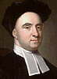

Philosophy Pages
| Dictionary | Study Guide | Logic | F A Q s | ||
|---|---|---|---|---|---|---|
| History | Timeline | Philosophers | Locke | |||
| Philosophy Pages
| Dictionary | Study Guide | Logic | F A Q s | ||
|---|---|---|---|---|---|---|
| History | Timeline | Philosophers | Locke | |||
|

Berkeley Life and Works . . Abstract Ideas . . Immaterialism . . Spirits . . Common Sense . . Science Bibliography Internet Sources |
Irish philosopher George Berkeley believed that Locke's Essay did not carry the principles of empiricism far enough. While still an undergraduate, this future bishop of the Anglican church worked out his trenchant criticism of Locke and proposed a simple but startling alternative.
Philosophers like Descartes and Locke tried to forestall problems of perceptual illusion by distinguishing between material objects and the ideas by means of which we perceive them.
There is, however, an obvious alternative. Common sense dictates that there are only two crucial elements involved in perception: the perceiver and what is perceived. All we need to do, Berkeley argued, is eliminate the absurd, philosophically-conceived third element in the picture: that is, we must acknowledge that there are no material objects. For Berkeley, only the ideas we directly perceive are real.
Developing the basis for an empiricist immaterialism requires unlearning significant portions of what Locke taught us. Berkeley devoted the lengthy "Introduction" of his Principles of Human Knowledge to a detailed refutation of what he supposed to be one of Locke's most harmful mistakes, the belief that general terms signify abstract ideas.
As Berkeley correctly noticed, our experience is always of concrete particulars. When I contemplate the idea of "triangle," the image that comes to mind is that of some determinate shape; having the abstract image of a three-sided figure that is neither equilateral nor isoceles nor scalene is simply impossible. (Principles: Intoduction 10) It is unnecessary, too: for purposes of geometrical reasoning, any particular image can be used as a representative for all. (It is not at all clear that even Locke would have disagreed with this position.)
But the consequence of Berkeley's criticism is a theory of meaning entirely different from Locke's.
General terms (or words of any sort) need not signify ideas of their own, on Berkeley's view.
Instead, they acquire meaning by a process of association with particular experiences, which are in turn associated with each other.
But of course mere association (as Locke himself had noted with respect to ideas) is not a reliable guide to reality.
As the self-proclaimed defender of common sense, Berkeley held that what we perceive really is as we perceive it to be. But what we perceive are just sensible objects, collections of sensible qualities, which are themselves nothing other than ideas in the minds of their perceivers. In the Dialogues Berkeley used Lockean arguments about the unreliability of secondary qualities in support of his own, more radical view.
Take heat, for example: does it exist independently of our perception of it? When exposed to great heat I feel a pain that everyone acknowledges to be in me, not in the fire, Berkeley argued, so the warmth I feel when exposed to lesser heat must surely be the same. What is more, if dip both of my hands into a bowl of tepid water after chilling one and warming the other, the water will feel both warm and cold at the same time. Clearly, then, heat as I perceive it is nothing other than an idea in my mind.
Similar arguments and experiments establish that other sensible qualities—colors that vary with changes in ambient light, tastes and smells that change perceptibly when I have a cold, and sounds that depend for their quality on the position of my ears and conditions in the air—are, like heat, nothing but ideas in my mind. But the same considerations apply to primary qualities as well, Berkeley pointed out, since my perception of shape and size depend upon the position of my eyes, my experience of solidity depends upon my sense of touch, and my idea of motion is always relative to my own situation. Locke was correct in his view of secondary qualities but mistaken about primary qualities: all sensible qualities are just ideas.
But sensible objects are nothing more than collections of sensible qualities, so they are merely complex ideas in the minds of those who perceive them.
For such ideas, Berkeley held, to be just is to be perceived (in Latin, esse est percipi).
There is no need to refer to the supposition of anything existing outside our minds, which could never be shown to resemble our ideas, since "nothing can be like an idea but an idea."
Hence, there are no material objects.
Locke's reference to an "unknown substratum" in which the features of material substances inhere is a pointless assumption, according to Berkeley. Since it is the very nature of sensible objects to be perceived, on his view, it would be absurd to suppose that their reality depends in any way upon an imperceptible core. This gives rise to a perfectly general argument against even the possibility of material substance.
Putting aside all of the forgoing lines of argument, Berkeley declared, the whole issue can be allowed to rest on a single question: is it possible to conceive of a sensible object existing independently of any perceiver? The challenge seems easy enough at first. All I have to do is think of something so remote—a tree in the middle of the forest, perhaps—that no one presently has it in mind. But if I conceive of this thing, then it is present in my mind as I think of it, so it is not truly independent of all perception.
According to Berkeley
(and such later idealists as Fichte and Bradley)
this argument shows irrefutably that the very concept of material substance as a sensible object existing independently of any perception is incoherent.
No wonder the representationalist philosophy leads to skepticism: it introduces as a necessary element in our knowledge of the natural world a concept that is literally inconceivable!
Although he maintained that there can be no material substances, Berkeley did not reject the notion of substance altogether. The most crucial feature of substance is activity, he supposed, and in our experience the most obvioius example activity is that of perceiving itself. So thinking substances do exist, and for these spirits (or souls or minds) to be is just to perceive (in Latin, esse est percipere).
Like Descartes and Leibniz, Berkeley held that each spirit is a simple, undivided, active being whose sole function is to think—that is, to have ideas such as those of sensible objects. Although each spirit is directly aware of its own existence and nature, it cannot be perceived. Since ideas are always of sensible qualities or objects for Berkeley, we have no ideas (but only notions) of spirits. This is a complete enumeration of what is real: active thinking substances and their passive ideas.
Strange though Berkeley's immaterialism may seem, it offers many clear advantages.
It is a genuinely empiricist philosophy, since it begins with what we actually experience and claims to account for everything without making extravagant suppositions about unknowable entities.
Next, we will consider how well this doctrine provides for common sense, science, and religion.
Is Berkeley's immaterialism a reasonable view? He claimed to defend common sense against skeptical challenges, yet he maintained that sensible objects exist only in the minds of those who perceive them. Surely common sense includes the belief that ordinary things continue to exist when I am not perceiving them. Although all of my visual ideas disappear and reappear every time I blink my eyes, I do not suppose that the everything I see pops out of existence and then back in. While a strict phenomenalist might point out that there is no practical consequence even if it does, Berkeley disagreed.
The existence of what I see does not depend exclusively on my seeing it. Berkeley's central claim is that sensible objects cannot exist without being perceived, but he did not suppose that I am the only perceiver. So long as some sentient being, some thinking substance or spirit, has in mind the sensible qualities or objects at issue, they do truly exist. Thus, even when I close my eyes, the tree I now see will continue to exist, provided that someone else is seeing it.
This difference, Berkeley held, precisely marks the distinction between real and imaginary things. What I merely imagine exists in my mind alone and continues to exist only so long as I think of it. But what is real exists in many minds, so it can continue to exist whether I perceive it or not. (That's why, unsure of the reality of what I seem to see, I may ask someone else, "Did you see that?") The existence of sensible objects requires that they be perceived, but it is not dependent exclusively on my perception of them.
In fact, the persistence and regularity of the sensible objects that constitute the natural world is independent of all human perception, according to Berkeley. Even when none of us is perceiving this tree, god is. The mind of god serves as a permanent repository of the sensible objects that we perceive at some times and not at others. (Although Berkeley took great pains to deny it, this view of the divine role in perception is very similar to Malebranche's notion of "seeing all things in god.")
So Berkeley's philosophy can claim to defend common sense.
It emphasizes that bodies or sensible objects really are just the ideas we have of them, yet can also explain their apparent independence of our perception.
All he rejects is the mysterious philosophical notion of the material object as an extended substance capable of existing independently of any perception.
That suppostion, he argued, is both unnecessary and untenable.
Even if we accept it as common sense, is Berkeley's immaterialism compatible with modern science? Certainly Galileo's astronomy, Newtonian mechanics, and the chemistry of Boyle all took for granted the existence and operation of physical objects. But Berkeley maintained that natural science, if properly conceived, could proceed and even thrive without assuming that bodies are material substances existing outside the mind.
Astronomy and optics seem to suppose that what we see exists at some distance from us. But Berkeley argued in his New Theory of Vision that our apparent perception of distance itself is a mental invention, easily explained in terms of the content of visual ideas, without any reference to existing material objects. In fact, Berkeley held, our visual and tactile perceptions are entirely independent. What we see and what we touch have nothing to do with each other; we have merely learned by experience to associate each with the other, just as we have learned to associate the appearance, the taste, and the smell of an apple. There is no reason to suppose that all of these qualities inhere in a common material substratum.
It follows that Locke was mistaken in supposing that our ideas of primary qualities have a special status because they arise from more than one of our senses. Although the corpuscularian hypothesis has yielded interesting results so far, Berkeley believed that science will soon enough outgrow it, learning to rely more directly on what we perceive for its hypotheses about what new experiences we rightly anticipate.
As we've already seen, Berkeley accounted for the persistence of bodies in terms of god's continuing perception of them. The causal regularities we observe in the natural world rely upon the same source. God's mind is an orderly one, and the apparent structures of space, time, and causality are nothing more than our awareness of the divine provision for our welfare. Natural science has plenty to do even in the absence of material objects, then: it is nothing less than a systematic exploration of the mind of god. (Here Berkeley came very close to the philosophy of Malebranche.)
More significantly for us, he also correctly anticipated much of the physical science of the twentieth century.
Like Berkeley, we believe that the solidity of bodies is merely apparent, that a proper cosmology depends upon our capacity to conceive it,
and that the role of science is to gather and correlate the independent observations of human perceivers.
It is not surprising that physicists like Mach expressed an appreciation for the thought of Berkeley.
The affinity between immaterialism and traditional religion is somewhat easier to understand. Materialism leads to atheism no less than to skepticism, Berkeley believed, since its belief that bodies exist outside the mind encourages the notion that the physical realm may always have existed independently of any spiritual influence. Immaterialism, by contrast, restores god to a role of central importance, not only as the chief among active thinking substances but also as the source of all sensible objects.
God's existence is made evident by everyday instances of perception, according to Berkeley.
Since sensible objects are mind-dependent yet exhibit a persistence and regularity that transcends our perception of them, it follows that there must be a master-perceiver, god, in whose mind they always are.
Thus, in the Dialogues, Philonous extols the beauty and majesty of the natural world, attributing them to the power and elegance of the divine mind.
This leads to the traditional conception of god as deserving of worship because of the benevolent creation of all that we observe.
All in all, Berkeley developed a philosophical system worthy of no little respect.
Immaterialism rests on the simple premise that there are no physical objects.
Berkeley defended this notion with many clever arguments and worked out its implications consistently.
Allthough counter-intuitive, immaterialism is difficult to refute.
| History of Philosophy | |||||||
|---|---|---|---|---|---|---|---|
| Previous | Next | ||||||